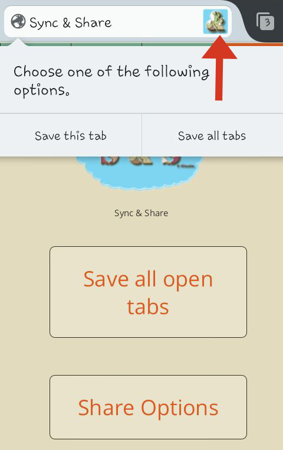
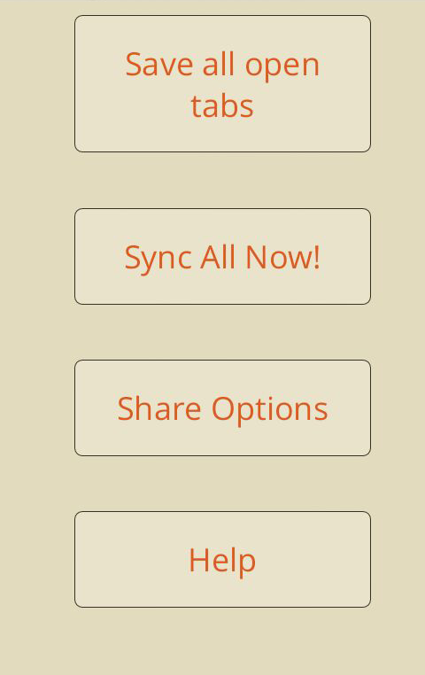

3.Sync
-
3.1.Auto Syncing
-
To activate this option, you just have to be signed into the Sync & Share Server page. Note that, if the Tabs, Bookmarks & History options in the Preference panel is unchecked then they won't be synced automatically.
Even when you are without Internet, you will still be able to view your synced items from the Sync & Share Menu. However, they will be updated only when there is Internet connection.
The mobile version has less features. Your mobile's bookmarks and history won't be synced because the addon can't access them yet (with this sdk release and any other). But you will be able to see your other devices' bookmarks and history and share them! Your tabs will be synced automatically.
-
3.2.Save manually
-
Picture 3.1. Save Tabs.
When an item is synced, they will be deleted when they are deleted from your device (unless it is being shared with someone). If you want to save any item even when they get deleted from your device, use this option. This option is available for the extra serversand for the default server.
-
Saving tabs.
You can save a tab, one by one, or you can save all the tabs that are open in your browser:
-
Save This Tab
- Touch for a while the icon located in the address bar.
- Two options will appear. Click the Save This Tab option.
-
Save All TabsPicture 3.2. Options panel.
There are two ways to save a tab.
- Touch for a while the icon located in the address bar.
Two options will appear. Click the Save All Tabs option.
- Go to
Sync & Share
menu.
A new tab will open. Touch Options. Then touch Save All Tabs.
- Touch for a while the icon located in the address bar.
-
Save This Tab
-
Saving Bookmarks.
This feature is not available in the mobile version.
-
Saving History.
This feature is not available in the mobile version.
-
Saving tabs.